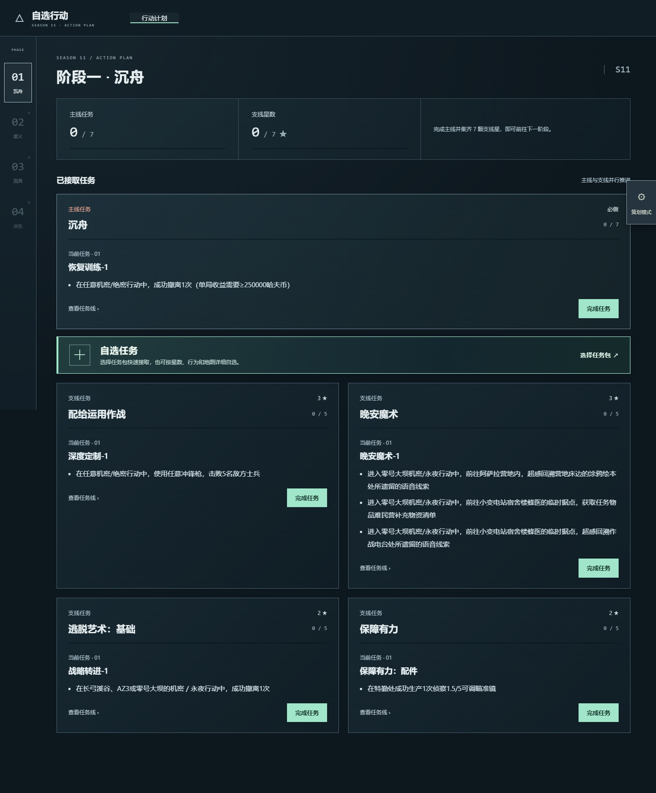
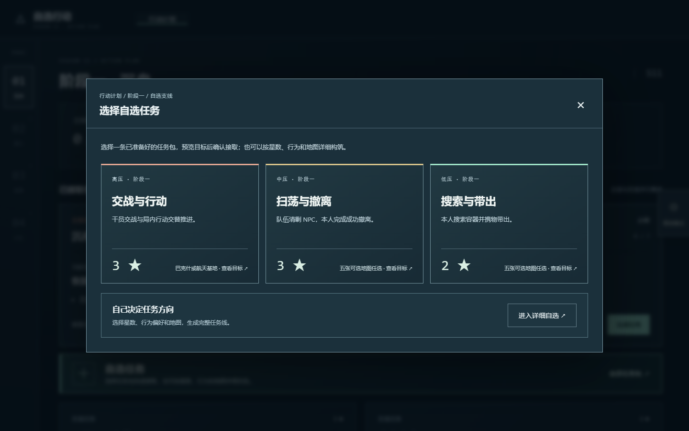
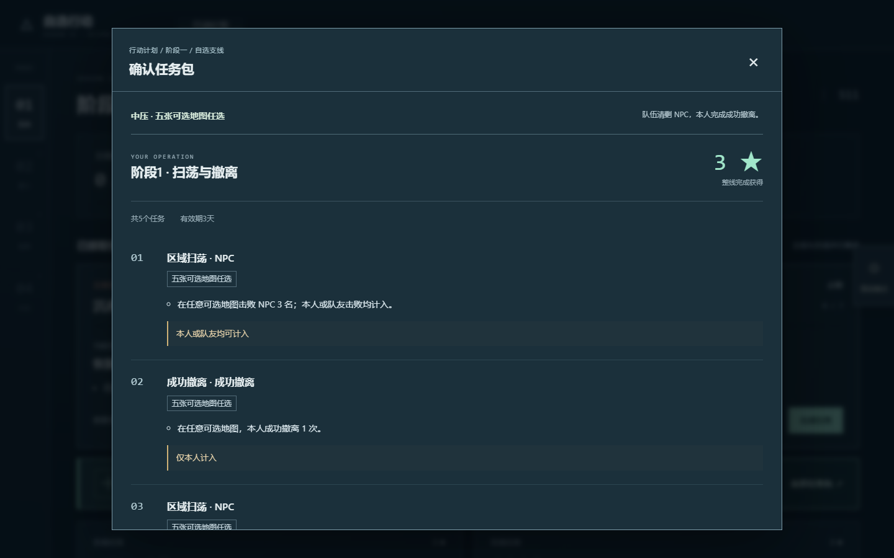
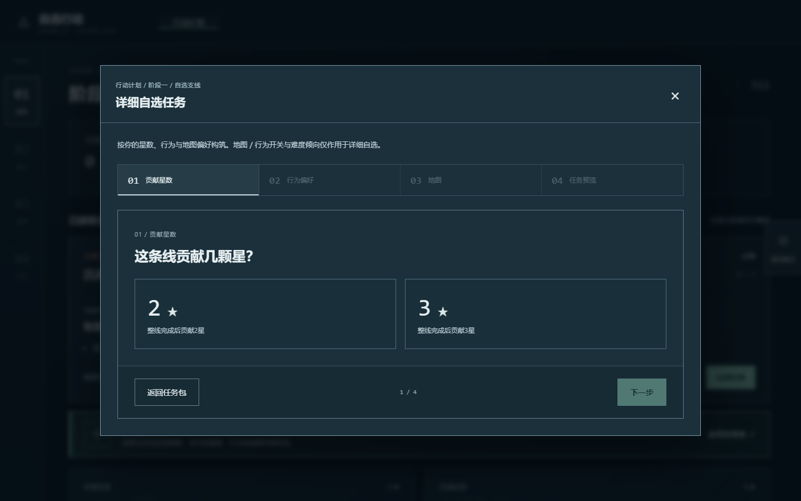

三角洲行动：赛季自选任务玩法设计案
正文 v1.2.0 · 2026-10-30
方案速读。 在 S11 行动计划前三阶段增加两条自选入口：三类固定任务包让玩家直接选择交战、扫荡或搜索方向；详细自选让玩家指定星数、行为偏好与地图。两者共用接取、期限和整线结星规则，只替代支线星数。策划以同一成本框架校验路线，减少不适配任务与集中卡点的重复投入，同时保留 3×3 安全箱的赛季长线目标。
一、背景
赛季任务把 3×3 安全箱设为长线目标，用阶段门槛和逐线奖励牵引玩家持续推进。S11 已减轻不少单项目标，但玩家仍会被预设支线组合和重复的任务目的地卡住。笔者结合 S6—S11 超过 1900 小时的游玩、S11 任务拆解及 B 站任务讨论，提出自选任务方案。
1.1 赛季任务规划玩家动线
行动计划以主线、支线星数和阶段门槛组织进程；完成任务线可获得 1 天 3×3 安全箱体验卡，最终奖励则给出明确的赛季目标。安全箱缓冲撤离失败的损失，过程体验卡让玩家在追逐长期目标时也能获得保障。
任务内容同时规定玩家去哪里、带什么装备、获取或提交什么物品、怎样交战和撤离。它是策划规划赛季动线的工具，也能引导武器使用、局内行为与物品供需。自选任务需要在这套调控结构内增加路线弹性，让不同能力和偏好的玩家都能持续推进。
1.2 减负之后，预设组合仍限制选择
S11 将更多主线目标转向调查、收集和跑图，减少交战要求，并调整支线开放与收集者提交要求。但星数仍与固定支线内容绑定：阶段一四条支线为 3／3／2／2 星，晋级需要 7 星。玩家若避开两条 3 星线，只做其余支线便无法达标。
于是，单个目标虽然变轻，玩家仍可能为了星数反复完成不擅长的战斗、陌生地图或与自身游玩方式不合的要求。任务失败还会带来战备损失、绕行与时间投入；减负没有完全转化为可选择的推进路线。
1.3 目的地聚集放大了低门槛任务的压力
S11 前三阶段的任务反复指向零号大坝营地和巴克什集市等片区，跨阶段主线与支线在这些区域交汇。笔者的游玩体验是：调查、取放等本来不要求交战的目标，也会因多人争夺同一片区而变成高压卡点；失败后还须再次前往。
固定任务包和详细自选都让玩家以其他支线内容补足星数，减少对不适配目的地的反复依赖，并给后续点位投放保留调控空间。舆情部分以 Key725 的赛季任务视频评论为主要参照；任务地点、版本调整和评论样本的逐项来源另见背景证据索引。
二、目的
| 目的 | 设计落点 |
|---|---|
| 打开推进路线 | 自选星数替代部分预设支线，保留主线和阶段门槛 |
| 降低选择负担 | 三类固定任务包直接提供完整任务线；有精确偏好的玩家进入详细自选 |
| 承接差异化需求 | 将偏好落实为任务内容，扩大可承担路线与地图选择 |
| 保持内容可控 | 任务包独立预置，详细自选由模板、权重、目标量和组合规则组织挑战 |
| 建立调控闭环 | 生成、评价、真实数据与体验验证共同支持策划迭代 |
| 降低集中卡点 | 提供替代目的地的补星路线，并让策划通过点位投放继续分散目标 |
| 改善赛季投入 | 从整个赛季比较对局、时间、赚损和奖励覆盖，关注继续开局意愿 |
三、概述
玩家在行动计划阶段一至三的任务页，从主线任务卡下方、预设支线列表上方的独立“自选任务”入口打开悬浮面板。第一层提供该阶段固定的三种任务包；玩家查看完整任务线后确认，即新建并接取这条自选任务线。另一入口“详细自选”进入现有构筑流程：选择星数、1—3项行为偏好和1—2张地图，由系统生成符合选择的完整任务线。
任务包：进入自选 → 选主题包 → 预览完整任务线 → 确认接取。 详细自选：进入自选 → 选星数、行为与地图 → 预览完整任务线 → 确认接取。 两条入口随后共用逐节点推进、到期、重构和整线一次结星。自选星数仅替代前三阶段部分预设支线星数；主线、阶段四与收集者、命运契约等独立目标保留。
| 阶段 | 交战与行动：高压 | 扫荡与撤离：中压 | 搜索与带出：低压 |
|---|---|---|---|
| 一 | 3 星 | 3 星 | 2 星 |
| 二 | 4 星 | 3 星 | 2 星 |
| 三 | 5 星 | 4 星 | 3 星 |
每阶段每类仅有一个固定任务包，共九条预置任务线；阶段一、二每包 5 节点，阶段三每包 6 节点。“交战与行动”将本人击败干员与局内行动交替编排，目标可在巴克什或航天基地任一张地图完成；“扫荡与撤离”组合队伍可共享的 NPC 击败与本人成功撤离；“搜索与带出”组合本人容器搜索与本人携物带出。中、低压包的目标可在五张合法地图（零号大坝、长弓溪谷、航天基地、巴克什、AZ3）中任一张完成，不含潮汐监狱。包内的允许地图是可执行范围，不要求一条包线覆盖所有允许地图；玩家在任务包入口不另选地图。详细自选若选择两张地图，仍须在整线目标中覆盖两张，两种地图语义不混用。阶段一现有自选星档只有 2、3 两档，因此高压与中压包均为 3 星；压力分层取决于预置目标及条件，星数只是阶段进度贡献，不单独等同真实难度。包内节点数量与目标数量为 Demo 策划演示参数，尚未由真实完成数据校准。
目前已基于S11真实任务底座，完成自选任务系统接入的交互原型与量化评价体系，可切换玩家体验与策划调控视角：
| 视角 | 可以体验或操作什么 |
|---|---|
| 玩家 | 从零推进真实任务，选择任务包或详细构筑，查看完整要求、逐节点完成并解锁后续阶段 |
| 策划 | 在策划模式按阶段编辑九包的星数、各节点目标类型与数量，查看草稿目标量 WU 提示；详细自选可开关地图／行为并调整平级／递进倾向；切换阶段及路线补足缺口，查看完整／剩余评价，推进模拟时钟并观察到期反馈 |
| 参数配置 | 固定包由独立配置源提供初值，策划草稿经合法性校验后应用；详细自选的模板、目标类型、内容权重、强度系数和组合约束由四组配置表调节；任一实际配置变更应用时重置原型玩家进度 |
原型中两条入口均免费，任务线建立后 3 个模拟日到期。阶段一详细自选2／3星、门槛7星；阶段二2／3／4星、门槛10星；阶段三3／4／5星、门槛14星，各阶段均须完成主线。阶段四顺序解锁后只读，独立目标保留自身时序，阶段三备用线在原型进入时全接。
本作品包内含可离线运行的交互 Demo，可体验阶段一至三的任务包与详细自选。
四、模型分析
4.1 两条内容入口共用同一评价闭环
固定任务包或详细偏好与赛季状态 → 完整任务线 → 成本评价 → 接取推进 → 数据与体验回流 → 策划调控。
固定任务包由策划按阶段预置完整目标、地图、数量和星数，玩家确认时直接实例化任务线，不经过详细自选的行为／地图候选生成。详细自选仍从星数、行为与地图输入生成目标：星数确定进度贡献，行为确定主题，地图确定投放范围；任务模板负责把动作、对象、数量、归属和失败条件组织成完整要求。两条入口的内容生成方式不同，接取后的计数、期限、结算与评价口径相同。
完整成本框架同时考虑对局、主动时间、日历、失败重试、净资源、地图竞争、队伍协调和期限风险。评价对两类自选线均检查任务组合承担的成本，输出完整／剩余要求和相对参考路线的差异，供策划判断内容是否适配。当前 Demo 的 WU 只覆盖已映射的目标动作量与压力标签，不能据此宣称已算出真实成本或完整难度。
策划再结合带玩家标签的完成数据与真实体验，对照预测和实耗，调整目标量、内容权重、限制与点位分配。评价随样本积累不断校准，并逐步承担更多生成决策，形成可调控、可验证的内容循环。
4.2 多路径补足缺口，按整个赛季核算
阶段是推进检查点，赛季是整体成本核算单位。以阶段一主线已完、支线已结4星为例，玩家可以追加原有3星线，也可选择3星任务包或构筑3星详细自选线；三者均补足7星，但后续任务衔接、资源留存与完成日历可能不同。
因此，比较要固定赛季起点、实际进度、已有资源、队伍条件和共同观察期，保留共同的主线、已结来源和后段目标，再切换预设、自选或混合路线。分别记录完整计划、当前剩余和已经发生的实耗，观察一次路线调整怎样影响后续推进。
同局多任务只记一次对局与重叠时间；到期或重构保留此前花掉的成本；3×3留存衔接下一局资源，体验卡按实际游玩覆盖计算。由此比较的是获得同一赛季进度与体验的整体投入，而不只是某条任务线的节点数量。
五、前端需求
延续原任务界面的阶段导航、任务卡和详情层级。自选任务入口独立位于主线任务卡与预设支线列表之间，以完整横幅和醒目的边框强化识别；点击后在原页面上打开悬浮面板，保留阶段信息作为上下文。玩家在悬浮层完成选择与预览，关闭或返回原页时不改进度。页面职责与同包交互图证如下。
| 页面 | 显示内容 | 操作与反馈 |
|---|---|---|
| 玩家任务页 | 当前节点、目标、地图／模式、归属、期限与进度 | 从阶段一零进度开始，预设已接、自选为空；完成后引导领取／接取下一节点，达标解锁新阶段 |
| 自选入口悬浮层 | 当前阶段、三类任务包、各包星数／主题／地图／目标预览、详细自选入口 | 选择任务包后确认即建线；不选包可转入详细自选。悬浮层关闭返回原任务页，未确认不生成实例 |
| 详细自选悬浮流程 | 星数、1—3行为、1—2地图与整线预览 | 每偏好至少一个主题任务；局内主题覆盖所选地图，纯生产只生成局外生产／上交目标；确认接取，整线完成一次结星 |
| 策划评价 | 阶段、路线选择、星数缺口、完整／剩余与参考成本 | 自动加入主线，切换路线补缺口；查看和勾选不改玩家进度，失效实例取消原选择 |
| 策划配置 | 九包的合法星档与逐节点主题目标类型、数量、草稿目标量预检；详细自选地图／行为开关、难度倾向、草稿与应用状态 | 固定包独立配置，详细自选开关不使包消失；未应用草稿不参与评价，任一配置实际变更提示全部重置，跨标签同步状态 |
| 模拟时钟 | 当前模拟时间及到期结果 | 推进1小时、1天或下一条到期；完成、停留和关页不走时 |
| 主线下独立入口与任务页 | 任务包悬浮选择 | 完整任务包预览 | 详细自选悬浮流程 |
|---|---|---|---|
 |  |  |  |


四张图均取自同包 Demo v0.9.0。点击缩略图可放大查看；窄屏界面已同步核对。
策划配置编辑另见九包编辑与目标量预检图证。预检只展示 D2 已量化目标动作量；高、中、低标签与真实难度的关系仍须体验和实耗校准。

窄屏保留主要任务和操作，悬浮面板可纵向滚动而不遮断关闭与确认操作；独立入口紧跟主线，与阶段切换分离。整线结算、到期损失和阶段解锁分别反馈。
六、后端需求
6.1 用可控配置组织任务的有机组合
笔者将详细自选的四组配置设计为任务组合的控制框架：模板描述动作与条件，投放策略决定内容分布，强度参数控制数量，组合校验约束合法性。固定任务包另设一层轻量预置配置，Demo 由 九包默认配置 提供九条已编排任务线的默认规格；策划模式可编辑包的星数和逐节点目标类型、数量。确认包时复用现有实例、计数和结算逻辑，不增加一套任务推进状态机。
| 配置组 | 调控空间 |
|---|---|
| 目标模板 | 行为、对象、地图／模式、主体、累计窗口、容量、失败范围和文案 |
| 投放策略 | 阶段星档、地图／行为开关、主题权重、覆盖规则及点位池 |
| 强度参数 | 阶段基准、平级／递进系数、单位强度、评价权重与限制系数 |
| 组合校验 | 偏好主题、地图覆盖、对象容量、合法模式及协议版本 |
任务包配置包含：包 ID、阶段、主题、星数、展示顺序、允许地图集合、地图策略、逐节点完整目标规格及配置版本。当前演示的地图策略为 `any_of_allowed`：高压包的 `allowedMapIds` 是巴克什／航天基地，中、低压包是五张合法地图；任务目标在其中任一张地图可计数。九条包配置与详细自选的地图／行为开关分开管理；这些开关只控制详细自选可用输入，不自动隐藏或改写固定包。策划可在包的现有阶段星档内调整星数，并在所属主题的两类目标之间选择每个固定节点的类型与 1—99 的数量；节点数和地图范围保持固定。应用时校验高压包星数≥中压包≥低压包、每包两类主题目标均出现，再绑定新规格版本并重置全部表层进度。未经应用的草稿不改变玩家层或当前评价。
策划模式实时展示三包草稿的已量化目标量 WU；若目标量次序与高／中／低标签不一致，给出提示而不自动拦截。WU 未包含战斗强度、失败损失等真实压力，不能仅凭该次序判定包的实际难度。
详细自选默认开放五图八行为，全部开放合法组合均须生成。每项偏好至少一个主题节点，纯生产免地图义务，混选由局内主题承接地图；选择两张地图时整线必须覆盖两张，每图唯一标杆固定1次。原有任务库与生成模板分别保存，实例绑定来源类型（固定包／详细自选）、配置版本、节点规格、期限及结算来源。
6.2 先验证模型，再逐步接管生成
生成与强度计算应结合真实玩家数据和体验样本验证。当前原型通过可配置参数及基础规划量呈现流程；笔者的推进思路是先让模型提供参考，再提高预测置信度，逐步接管内容分配：
| 步骤 | 依据与产出 |
|---|---|
| 标记样本 | 记录能力／经验、偏好、地图熟悉度、组队、初始资源和可用时间，关联任务版本、对局及资源流水 |
| 对照验证 | 按标签对比预测与实际完成成本，结合体验访谈观察卡点、失败和放弃；保留未完成样本 |
| 校准模型 | 用留出样本检查预测误差、区间命中及样本覆盖，调整数量、类型权重和条件系数 |
| 受控生成 | 在验证覆盖较好的任务类型与人群范围内参与内容分配，策划保留硬规则、参数审批与回退能力 |
详细自选的单节点目标强度：tᵢ＝阶段基准bₛ×（所选星数／本阶段最高星档）×节点系数fᵢ。 平级fᵢ＝1，递进系数线性变化，按单位强度向上取整；递进参考此前配置强度高点，允许数量平台。固定任务包的目标量与条件由包配置给定，不在玩家确认时重新按此式生成；包仍进入同一评价模型，供策划对照压力层级与同阶段预设线。固定包的普通本人成功撤离通过 Demo 评价适配按 1.5 WU／次计入，与原 D2-R1 动作单位一致；CFG-0.3.0 锁版内容不因任务包而改写。WU 是目标动作量参考，不是完整真实难度。
详细自选生成依次校验输入、落实主题与地图、组合节点、分配目标量并输出规格；同一生效配置与规范化输入保持内容稳定。固定包只读取已经生效的完整规格，校验后实例化。两种来源的评价数据、配置版本和调参记录关联保存，便于追踪变化来自包内容、生成参数还是玩家选择。
6.3 推进、结算与配置事务
| 处理 | 实现要求 |
|---|---|
| 当前节点 | 服务端只计已接任务，核地图／模式、对象、主体和窗口；固定包按 `allowedMapIds` 校验目标所在地图及 `any_of_allowed` 策略，详细自选按必覆盖的地图义务校验。仅NPC击败与活动可共享，其余本人。完成锁定，失败按自身窗口处理，下一节点回局外领取／接取 |
| 自选入口 | 固定包确认记录 packageId 与版本，详细自选确认记录规范化输入与生成版本；两者均创建一条正式自选线，关闭面板或仅预览不创建实例 |
| 并行与去重 | 跨阶段在途线可并行，合法事件分别核验各实例；实例内去重，同线后续节点不回放本局事件 |
| 整线结算 | 完成全部节点后一次计入所属阶段，重复上报不重复加星；计划足星与实际已结星分别记录 |
| 到期与重构 | 生成后72模拟小时到期，清本线未结算进度，含已完成但未结线节点；保留已结来源、其他实例及赛季实耗 |
| 配置应用 | 校验通过后切换生效版本，原子重置原型阶段、星账、实例与时钟；失败保留原版本和原账 |
正式服务须读取可信事件与资源流水，并以任务实例绑定的 `allowedMapIds` 等条件校验地图、本人放置、带出和提交。本地 Demo 的“完成”按钮仅用于预览进度，不核验真实对局事件，也不能证明服务端的地图限制已经落地。草稿与生效配置隔离，实例失效或替换后原评价选择同步失效。
6.4 赛季统一核算与路线比较
在阶段评价之上设置赛季汇总层，汇集共同主线、独立前置、奖励覆盖和一份实际成本账，输出完整计划、当前剩余、累计实耗与目标达成情况。两方使用同一观察期及达标后的统计截止规则，保留未完成、到期和放弃样本。参考保留全部已结预设／自选来源，仅用预设线补未来缺口；各阶段星账继续独立。
基础规划量按节点基础量、目标数量与类型／条件权重计算；完整求和，剩余扣有效完成节点，未完成节点内部部分量暂不折算。比较输出所选−参考的差值与所选÷参考的比值，参考为0时比值留空，不足星先报缺口。
完整成本按N对局、T主动时间、L日历、F失败重试、G净资源、M地图竞争、Q协作、H期限风险记录。跨线跨阶段按唯一对局去重、主动时段取并集；日历按等待与执行的关键路径计算，避免直接相加阶段时长和风险。
材料、产物、提交、战备、3×3留存及下一局起始资产在同一净流水中衔接；体验卡只计有效时段覆盖的实际游玩时间。到期、放弃和重构不抹掉此前实耗。比较按同标签、同起点逐条求差，再汇总分布；期限按同一时点的剩余日历与剩余期限评价，无法估计的维度留空。
6.5 目的达成与迭代重点
| 设计目的 | 当前落点 | 后续检验 |
|---|---|---|
| 增加路线 | 自选补足原阶段门槛，原型可切换玩家与策划视角 | 选择、达标、放弃与重新开局 |
| 降低选择负担 | 每阶段三类固定包可快速确认，详细自选仍可按精确偏好构筑 | 包选择率、从入口到确认的时长、转入详细自选及退出比例 |
| 适配偏好 | 主题与地图义务进入生成规则 | 不同标签玩家的完成成本与体验 |
| 调控内容 | 九条包配置与详细自选四组配置均可追版；参考评价使用同一口径 | 样本覆盖、预测误差、内容稳定性及不同包的实际压力差 |
| 缓解集中卡点 | 玩家可改选支线类型与详细地图；真实点位避让尚未接入 | 同阶段热点到访、失败重试、任务点争夺与体验反馈 |
| 改善赛季投入 | 整体核算框架衔接任务、资源和奖励覆盖 | 3×3可达节奏、失败后资源、后续参与 |
后续重点是用真实样本校准评价，并将地点占位绑定到协议、容量和联合可达合格的多个点位池，减少新增支线的集中叠加，保留主线必经点。同阶段在途上限、主动重构损失、超额星处理与自选奖励继续作为参数议题。